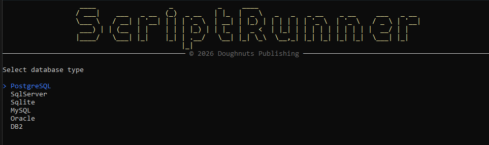
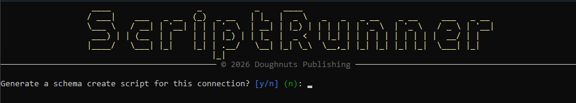
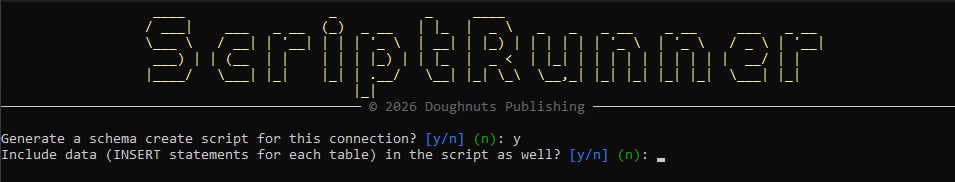
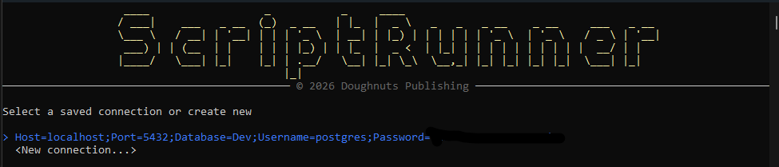
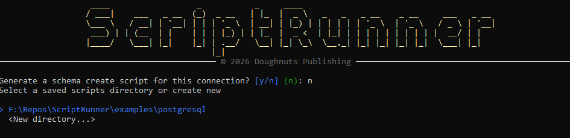
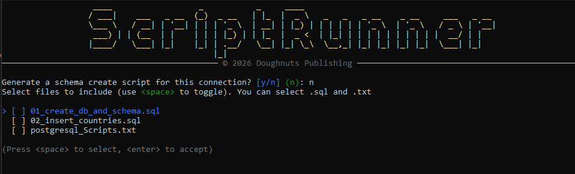
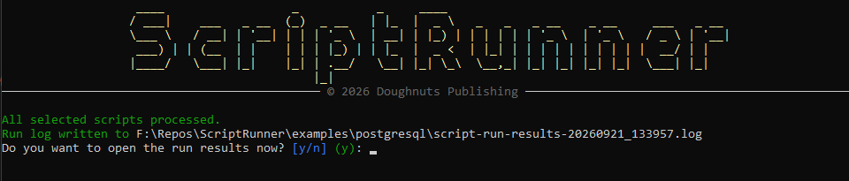

Run SQL scripts
the same way, every time.
ScriptRunner is a free, open-source SQL script runner for PostgreSQL, SQL Server, MySQL, Oracle, DB2 and SQLite. Run scripts interactively or from the command line in CI/CD pipelines, and generate a full schema create script from any live database.

A SQL script runner built for operational work
A lightweight framework to run scripts, manage execution context, and capture results for automation and operational tasks.
One-off or batched runs
Pick a scripts folder, choose the files you want, and run them in order. The folder can hold .sql and .txt scripts.
Auditable results
Stdout, stderr and exit codes are captured and saved, so every run leaves a record.
CI/CD ready
Pass three arguments to skip the interactive prompts entirely and run straight from a pipeline.
Schema create scripts
Generate DDL for tables, views, functions, procedures and triggers from a live connection, built with each database's own reflection tools.
Optional data export
Add INSERT statements for every existing row alongside the generated schema, with values formatted by column type.
Remembers your settings
Connection strings and script folders are saved, so the next run is a couple of keypresses.
Supported databases
One tool for every database you work with, using each provider's native .NET data driver.
Quick start: run SQL scripts from the command line
Download a prebuilt Windows x64 release, or build it yourself with the .NET 8 SDK.
1. Build
Requires the .NET 8 SDK.
git clone https://github.com/cccsdh/Dnp.ScriptRunner.git
cd Dnp.ScriptRunner
dotnet restore
dotnet build --configuration Release2. Run interactively
ScriptRunner prompts you for the database type, the connection and the scripts to run.
dotnet run --project ./ScriptRunner/Dnp.ScriptRunner.csproj3. Or run non-interactively from the command line
Supply the database type, connection string and scripts directory, and ScriptRunner skips the prompts and processes the folder straight away.
# <DatabaseType> "<ConnectionString>" "<ScriptsDirectory>"
dotnet run --project ./ScriptRunner/Dnp.ScriptRunner.csproj -- PostgreSQL "Host=localhost;Username=app;Password=pass;Database=mydb" "C:\scripts"DatabaseType: one ofPostgreSQL,SqlServer,Sqlite,MySQL,Oracle,DB2ConnectionString: the full connection string for the provider (quote it if it contains spaces)ScriptsDirectory: full path to the folder of.sqland.txtscripts
In CLI mode, the connection string and scripts directory are saved to Settings if they aren't already there.
Generate a create script from an existing database
Point ScriptRunner at an existing database and get back a single .sql file that recreates it.
- After choosing a connection, answer Yes to “Generate a schema create script for this connection?”
- Choose whether to include data as
INSERTstatements for each table. - Pick or create an output directory. It's created automatically if it doesn't exist.
- ScriptRunner writes
schema-create-<DatabaseType>-<timestamp>.sqland exits. No scripts run in this mode.
CREATE SCHEMAstatements for providers that have a schema conceptCREATE TABLEwith columns, defaults, identity columns, keys, constraints and indexes- Views, functions, stored procedures and triggers
- Optionally, an
INSERT INTOfor every existing row


| Provider | Schema statement | Table DDL source | Views / functions / procedures / triggers |
|---|---|---|---|
| PostgreSQL | CREATE SCHEMA IF NOT EXISTS | information_schema + pg_constraint / pg_indexes | pg_get_viewdef, pg_get_functiondef, pg_get_triggerdef |
| SQL Server | Guarded CREATE SCHEMA (skipped for dbo) | sys.columns + sys.key_constraints / sys.foreign_keys / sys.indexes | sys.sql_modules.definition, each object separated by GO |
| MySQL | CREATE SCHEMA IF NOT EXISTS + USE | SHOW CREATE TABLE | SHOW CREATE VIEW / PROCEDURE / FUNCTION / TRIGGER |
| Oracle | Not applicable (schema is the connected user) | DBMS_METADATA.GET_DDL('TABLE', ...) | DBMS_METADATA.GET_DDL for each object type |
| DB2 | CREATE SCHEMA | SYSCAT.COLUMNS + SYSCAT.TABCONST / SYSCAT.REFERENCES / SYSCAT.INDEXES | SYSCAT.VIEWS / SYSCAT.ROUTINES / SYSCAT.TRIGGERS |
| SQLite | Not applicable | Original CREATE TABLE text from sqlite_master | Read from sqlite_master (SQLite has no procedures or functions) |
- If one object can't be scripted, for example because of a permissions issue, a
-- Failed to generate DDL for ...comment is written in its place and generation carries on. - SQL Server tables with an identity column are wrapped in
SET IDENTITY_INSERT ... ON/OFFso existing key values are kept. - Data is scripted in schema order, not foreign-key dependency order. You may need to reorder statements or disable constraint checks when loading into a fresh database.
Screenshots: a tour of the prompts
Every step is a keyboard-driven console prompt. Select a screenshot to enlarge it.




Want every prompt explained? Read the User Guide.
Frequently asked questions
How do I run SQL scripts from the command line?
Pass three arguments: the database type, the connection string and the scripts directory, for example Dnp.ScriptRunner.exe PostgreSQL "Host=localhost;Database=mydb;..." "C:\scripts". ScriptRunner skips the interactive prompts and runs the scripts in that folder, which makes it suitable for CI/CD pipelines.
Which databases does ScriptRunner support?
PostgreSQL, Microsoft SQL Server, MySQL, Oracle, IBM DB2 and SQLite.
How do I generate a CREATE script from an existing database?
In interactive mode, choose a connection and answer Yes to “Generate a schema create script for this connection?”. ScriptRunner writes a single .sql file containing CREATE SCHEMA, CREATE TABLE (with keys, constraints and indexes), views, functions, stored procedures and triggers, built with the database's own DDL reflection.
Can ScriptRunner export table data as INSERT statements?
Yes. When generating a schema create script you can choose to include an INSERT INTO statement for every existing row. Values are formatted by column type, and SQL Server identity columns are wrapped in SET IDENTITY_INSERT.
What types of script files can it run?
ScriptRunner runs .sql and .txt script files from the folder you choose.
Is ScriptRunner free?
Yes. ScriptRunner is open source under the MIT License. The prebuilt release is for Windows x64 and needs the .NET 8 runtime; you can also build it from source with the .NET 8 SDK.
Contributing
Contributions are welcome. Fork the repository, create a feature branch, add tests and documentation, and open a pull request describing your changes. For questions or support, open an issue.